<style>
    /* 基础样式：沉浸式阅读体验 */
    body { 
        font-family: -apple-system, BlinkMacSystemFont, "Segoe UI", Roboto, "Helvetica Neue", Arial, sans-serif; 
        line-height: 1.8; 
        color: #333;
        max-width: 800px; 
        margin: 0 auto; 
        padding: 40px 20px; 
        background-color: #fff;
    }

    /* 章节单元 */
    .chapter-unit { margin-bottom: 60px; }

    /* 标题体系 */
    h1 { font-size: 2.5em; color: #1a237e; border-bottom: 3px solid #3949ab; padding-bottom: 15px; margin-top: 0; margin-bottom: 30px; }
    h2 { font-size: 1.8em; color: #283593; margin-top: 50px; border-left: 5px solid #3949ab; padding-left: 15px; }
    h3 { font-size: 1.4em; color: #303f9f; margin-top: 35px; font-weight: 600; }
    h4 { font-size: 1.2em; color: #5c6bc0; margin-top: 25px; font-weight: bold; }
    
    /* 正文 */
    p { margin-bottom: 1.5em; text-align: justify; text-justify: inter-ideograph; }
    strong { color: #1a237e; font-weight: 700; }

    /* 特殊区域 */
    .sidebar { 
        background: #e8eaf6; 
        padding: 25px; 
        border-left: 5px solid #3f51b5; 
        margin: 30px 0; 
        border-radius: 0 8px 8px 0; 
        box-shadow: 2px 2px 10px rgba(0,0,0,0.05);
    }
    .sidebar-title { font-weight: bold; color: #3f51b5; font-size: 1.1em; margin-bottom: 10px; display: block; }

    .discovery-box {
        background-color: #fff3e0;
        border: 2px solid #ffb74d;
        padding: 25px;
        margin: 40px 0;
        border-radius: 8px;
    }
    .discovery-box h3 { color: #e65100; margin-top: 0; border-bottom: 1px solid #ffcc80; padding-bottom: 10px; }

    .concept-check {
        background-color: #e0f2f1;
        border: 1px solid #80cbc4;
        padding: 15px;
        margin: 20px 0;
        border-radius: 8px;
        color: #00695c;
        font-weight: 500;
    }
    .concept-check::before { content: "✅ 概念理解检查"; display: block; font-weight: bold; margin-bottom: 5px; color: #004d40; }

    .ultimate-question {
        background-color: #263238;
        color: #eceff1;
        padding: 25px;
        margin: 40px 0;
        border-radius: 8px;
        border-left: 5px solid #ffca28;
    }
    .ultimate-question h3 { color: #ffca28; margin-top: 0; }

    /* 习题区域 */
    .exercises { background: #fafafa; padding: 30px; margin: 50px 0; border: 1px solid #eee; border-radius: 8px; }
    .question-list { padding-left: 20px; }
    .question-list li { margin-bottom: 15px; }
    
    /* 图片占位符 */
    .image-placeholder { 
        background: #f8f9fa; border: 1px solid #dee2e6; 
        display: flex; flex-direction: column; align-items: center; justify-content: center;
        margin: 30px auto 10px auto; 
        color: #6c757d; font-family: monospace; font-size: 0.8em;
        position: relative;
        overflow: hidden;
    }
    .image-placeholder::before { 
        content: "🖼️ Image Area " attr(data-bbox); 
        margin-bottom: 10px;
    }
    .caption { 
        font-size: 0.9em; 
        color: #555; 
        text-align: center; 
        margin-bottom: 40px; 
        line-height: 1.4;
        padding: 0 10%;
        font-style: italic;
    }
    .caption strong { color: #3949ab; font-style: normal; }

    /* 表格 */
    table { width: 100%; border-collapse: collapse; margin: 20px 0; font-size: 0.9em; }
    th, td { border: 1px solid #c5cae9; padding: 10px; text-align: center; }
    th { background-color: #e8eaf6; color: #1a237e; font-weight: bold; }
    tr:nth-child(even) { background-color: #f8f9fa; }

    /* 列表与引用 */
    ul, ol { margin-bottom: 1.5em; }
    li { margin-bottom: 0.5em; }
    sup, sub { font-size: 0.75em; line-height: 0; position: relative; vertical-align: baseline; }
    sup { top: -0.5em; }
    sub { bottom: -0.25em; }
</style>
<article class="chapter-unit">
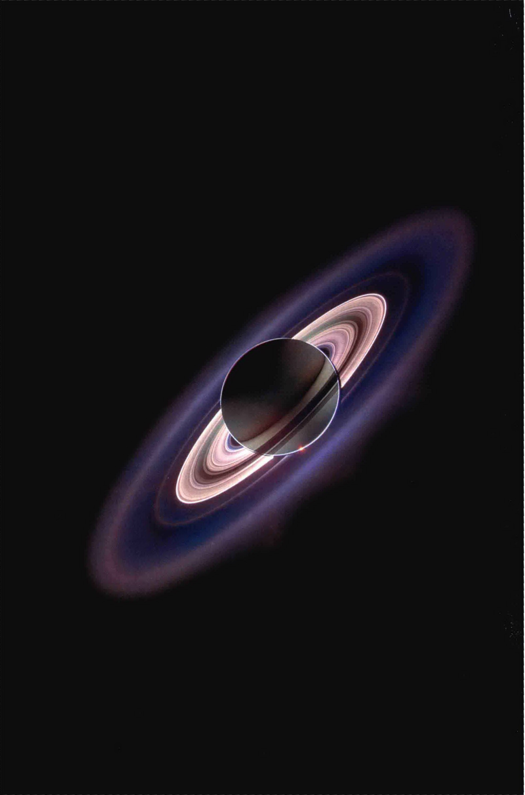
<h1>第12章 土星：壮观的光环和神秘的卫星</h1>
<aside class="sidebar">
<span class="sidebar-title">学习目标</span>
<p>本章的学习将使你能够：</p>
<ul>
<li>总结土星的轨道和物理性质，并将它们与木星比较。</li>
<li>描述土星的大气及其内部的组成和结构。</li>
<li>解释为什么土星内部热源和磁层不同于木星。</li>
<li>描述土星光环的结构和组成。</li>
<li>定义“洛希极限”，并解释其与土星光环起源的相关性。</li>
<li>总结土卫六的一般特征，并讨论其大气中的化学过程。</li>
<li>概述土星小卫星的一些轨道和地质特性。</li>
</ul>
</aside>
<p>土星是最美丽、最迷人的天体之一。土星光环是一个惊人的景象——甚至只是通过小型望远镜观看，它很可能也是这个行星最知名的特征。不过，除了其著名的光环，土星还呈现给我们另一颗类木行星的例子，让我们进一步探讨这些巨型气态行星的性质。</p>
<p>土星在许多方面与其更大的邻居——木星相似，比如成分、尺寸、结构等方面，虽然其较低的质量和到太阳更远的距离意味着土星大气颜色远没有木星那么明显。它的天气模式虽然同样暴烈，却也更难看到。另一方面，土星的光环和卫星系统与木星有很大的不同。这些行星之间的比较，为我们提供了关于所有类木行星的结构和演化的宝贵知识。</p>
<aside class="sidebar">
<span class="sidebar-title">知识全景</span>
<p>现代太空时代的工程壮举能让我们去探索许多我们太阳系的不同世界。这样惊心动魄的探索令人想起早期的航海大发现：由哥伦布、麦哲伦、科尔特斯、德·尚普兰和许多其他海员——这些人冒险穿过未知的大西洋，最终环游世界——从欧洲发起的对美洲的探索。现在，在21世纪，由人类控制的自动太空船在探索全新的、未知的世界时起着现代航天员的作用，它们发现的东西绝对是惊人的。</p>
</aside>
<h2>12.1 轨道和物理性质</h2>
<p>土星 (Saturn) 是古代天文学家所知的最外围的行星。以罗马神话中 Jupiter（木星）的父亲的名字命名。土星到太阳的距离几乎是木星的两倍。土星相对于恒星的公转周期为29.4个地球年，是古代世界所知的最长的自然时间单位。</p>
<h3>整体性质</h3>
<p>在冲日时，这颗行星位于其最亮的位置，位于距地球不到 8AU 的地方。此时，大家能在地面（或用地球轨道上的设备）拍摄土星的照片。然而，土星离太阳的距离仍然使得土星比木星和火星明显暗弱。土星的视亮度排在木星、内行星及天空中一些最明亮的恒星之后。</p>
<p>类似木星，土星的许多卫星允许我们在来自地球的航天器到达土星之前很多年就对其质量进行精确的测定。土星的质量为 5.7 × 10<sup>26</sup>kg，为地球质量的95倍。（3.1节）虽然不到木星质量的三分之一，但土星仍然是一个巨大的天体——至少以类地行星的标准而言。</p>
<p>根据土星的距离和角大小，这颗行星的半径——以及其平均密度——可以迅速被算出。土星的赤道半径为 60,000km，或9.5倍地球半径。平均密度为 700kg/m<sup>3</sup>——比水的密度 (1000kg/m<sup>3</sup>) 小。于是我们有了一个可以浮在水面上的行星——如果有一个足够大的海洋的话！类似木星，土星的低平均密度表明，它主要由氢和氦构成。然而，土星的质量较低，导致了其较低的内部压力，使这些气体被压缩得没有木星上的致密。</p>
<h3>自转速率</h3>
<p>跟木星一样，土星的自转非常迅速，并且也是较差自转。（8.1节）大气的自转周期——通过跟踪观测到的行星大气层中的天气特征来确定——在赤道上为10小时14分钟，在高纬度地区大致为10小时40分钟。然而，行星内部的自转周期——由卡西尼号通过测量磁层的爆发而获取，应该能更好地体现行星核心的自转——为10小时46分钟，明显长于大气的自转周期。</p>
<p>奇怪的是，卡西尼号测量的时间比20年前由旅行者号测量的相应结果长约6min（使用类似的装置）。科学家不确定这种差异的原因，虽然他们不认为土星的实际自转速率在此相对较短的时间内已经改变了高达1%。相反，行星的磁场似乎不像人们之前所想的那样，是一个指示内部自转的好的指标。土星的自转轴明显倾斜，与行星轨道的平面夹角为27°，类似地球和火星。研究人员认为，行星的磁场和土卫二（见12.5节）之间的相互作用倾向于减慢自转速度，可以解释观测到的自转周期的差异。</p>

<div class="caption">
<strong>图12.1 光环的方位</strong><br/>
        随着土星绕太阳公转，土星光环朝向我们的角度也在改变。插入图是大致真彩色的图像，跨越了几年时间——从1995年（下方）至差不当现在（上方），展示了从我们的角度看，光环如何改变——从几乎侧视到接近正视。[美国国家航空航天局 (NASA)]
    </div>
<p>由于土星的密度较低，这样快速的自转使得土星比木星更扁平。事实上，土星是太阳系中“最扁平”的行星，极半径只有 54,000km，大约比其赤道半径小10%。仔细计算的结果表明，这种程度的扁平化，虽然已经很大了，但如果它只是由氢和氨所组成的，那么其扁平程度还会更大。因此，天文学家认为，土星也有一个岩质核心，其质量也许高达15倍地球的质量，或1.5倍木星核心的质量。</p>
<h3>光环</h3>
<p>土星最著名的特征是其壮观的光环系统。由于光环在土星的赤道平面上，其外观（从地球上看）随着土星绕太阳的运行而变化，如图12.1所示。随着土星沿着它的轨道运行，光环被照亮的角度和我们看它们的角度都不同。在土星的夏季或冬季，该行星倾斜过来，北极或南极朝向太阳，高反射的光环在这时是最亮的。在土星的春季和秋季，环的边缘朝向太阳和我们，所以环似乎完全消失。最近的两次“光环横置”发生在1996年和2010年。</p>
<p>从这个简单的观测，我们可以做出一个重要的推论：光环是非常薄的。事实上，我们现在知道，它们的厚度只有几十米，即使它们的直径超过 200,000km。</p>
<div class="concept-check">
        为什么本章显示的某些土星图像显示的光环是从上面看的，而另一些是从下面？
    </div>
<h2>12.2 土星大气</h2>
<p>土星比木星的色彩少得多。图12.2显示黄色和棕褐色的云带平行于赤道，但这些区域比木星上的云带显示的大气结构更少。没有明显巨大且寿命长的“点”或“卵”装饰在土星的云层上。云带和风暴确实存在，但它们基本都没有表现出如木星上那样明显的颜色变化。这是有史以来获得的土星全球最高分辨率的图像——超过100张真彩色照片的拼接图——显示其云盖的结构十分精妙。</p>

<div class="caption">
<strong>图12.2 土星</strong><br/>
        这张照片于2005年由接近土星的卡西尼号太空船拍摄，实际上是由真彩色拍摄的很多图像拼接而成的。注意土星精细的着色，以及其光环的细节。此图的分辨率为40km。[美国国家航空航天局 (NASA)]
    </div>
<h3>组成与染色</h3>
<p>天文学家在20世纪30年代在土星反射太阳光的光谱中首次观测到了甲烷，大约在同一时间，甲烷也在木星上被发现了。然而，直到20世纪60年代初，当更灵敏的观测成为可能时，氨才终于在土星上被发现。在土星寒冷的上层大气中，大部分的氨呈现为固态或液态，只有相对较小的部分呈现为气态，吸收太阳光并制造出光谱线。在20世纪60年代末，天文学家终于第一次对土星的氢和氦含量进行了精确测定。这些地面测量被20世纪70年代到达的先驱者号和旅行者号探测器所证实。</p>
<p>土星的大气由分子氢 (H<sub>2</sub>, 92.4%)、氦 (He, 7.4%)、甲烷 (CH<sub>4</sub>, 0.2%)、氨 (NH<sub>3</sub>, 0.02%) 组成。类似木星，由氢和氦主宰——因为这颗行星较大的质量和较低的温度，这些最丰富的元素从来没有从土星的大气中逃脱出来（见详细说明5-1）。然而，土星上氦所占的比例远低于木星（在那里，如我们所见，氦占大气近14%）或太阳。</p>
<p>难道创造外行星的过程优先剥离了土星近一半的氦？或者氦莫名其妙地从土星上失踪，而较轻的氢却留下了？显然，这些都是极不可能的。相反，天文学家认为，在土星过去的某个时间，较重的氦开始向这个星球的中心下沉，因此其在外层的丰度减少，并让留下的氢相对更丰富。我们不久之后将继续探讨这一分化的原因和结果。</p>
<p>图12.3描绘了土星的大气结构（回忆相应的木星大气图，图8.7）。在许多方面，土星的大气与木星的相当类似，除了温度低一点——因为土星离太阳更远，也因为它的云层稍厚。类似木星，由于土星缺乏固态表面，因此我们将对流层顶部作为我们的参考水平面，将它设置为0km。可见的云层的顶部位于这个平面以下约50km。仍然类似木星，土星云层排列成三个不同的层，分别由（随着深度的增加）氨、硫氢化铵和水冰组成。在云层之上，有一个薄雾层，是阳光对土星上层大气的作用形成的。</p>

<div class="caption" style="text-align: left; clear: left;">
<strong>图12.3 土星的大气</strong><br/>
        土星大气的垂直结构包含几个云层，类似木星，但土星较弱的引力导致了较厚的云层和更均匀的外观。
    </div>
<p>土星大气的三个云层的总厚度大约为 200km、与木星的约80km相比，每一层比木星上的对应层都稍厚。这种差异的原因是土星的引力较弱（由于其较小的质量）。在薄雾层中，木星的引力场是土星的2.5倍，所以木星的大气层被更有力地拉向行星的中心。因此，木星大气层比土星的压缩得更厉害，云被更紧密地挤压在一起。</p>
<p>土星云层的颜色，以及行星整体的奶油糖果色调，源于与木星上相同的、基本的云化学过程。然而，由于土星的云层较厚，其顶部的洞和裂缝很少，所以我们很少能看到较低的、更加丰富多彩的云层。相反，我们只看到了顶层的一些层次，这也解释了为什么土星的外观相当均匀。</p>
<h3>天气</h3>
<p>土星有大气风模式，在很多方面让人想起木星的类似模式。其有一个整体的由东向西的纬向流，显然相当稳定。计算机增强了土星的照片，带来更多的云的对比，如图12.4所示，清楚地展示了云带和卵形风暴系统，以及看起来与木星上的情形类似的湍流模式的存在。科学家认为，造成土星云带和风暴的原因在本质上与木星的原因相同。基本上，大尺度流动和小尺度风暴系统都是由土星内部的对流运动和该行星的快速自转所驱动的。</p>

<div class="caption">
<strong>图12.4 土星的云层结构</strong><br/>
        科学家使用计算机增强和伪彩色以提高图像的对比度，这样可以展示出土星云盖中更多的结构。这里展示了旅行者号拍摄的土星全貌，以及一幅较小的局部放大图。[美国国家航空航天局 (NASA)]
    </div>
<p>土星上的纬向流比木星上的快许多，并显示出较少的东-西交替。从图12.5可以看出（也可参见图8.6），赤道附近的向东的急流在木星上可以达到约400km/h的速度，在土星上则更加轻快，可以达到1500km/h，并向高纬度地区延伸。直到北纬40°和南纬40°，才发现第一个向西流。北纬40°也标示出了土星上最强大的云带以及最明显的卵形斑和湍流涡旋。天文学家仍然不完全了解木星和土星的流动模式之间存在差异的原因。</p>

<div class="caption" style="text-align: left; clear: left;">
<strong>图12.5 土星的纬向流</strong><br/>
        土星上的风所具有的速度甚至超过木星。类似木星，土星可见的云带看上去与风速的变化相关。
    </div>
<p>1990年9月，在土星的南半球，业余天文学家发现一个大的白斑，略低于赤道。一个月以后，哈勃太空望远镜拍摄了该现象更精细的图像，如图12.6所示——该白斑已经发展成为完全包围土星赤道带的云带。天文学家怀疑，白色产生于氨冰晶体，这些晶体是在温暖气体上涌时形成的羽状物穿透较冷的层云时形成的。因为这些晶体是刚形成的，它们尚未受到对土星其余部分进行着色的化学反应的影响。</p>
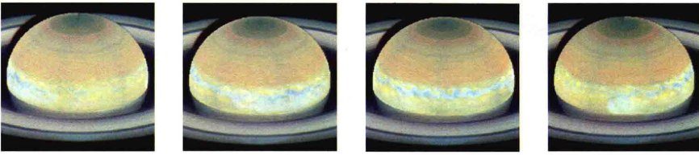
<div class="caption" style="text-align: left; clear: left;">
<strong>图12.6 土星风暴</strong><br/>
        循环和不断发展的云系在土星上很明显，这是哈勃太空望远镜拍摄的图片，时间间隔约2h（从左到右）。[美国国家航空航天局 (NASA)]
    </div>
<p>这样大的斑点在土星上是比较少见的。它们看上去大约每30年出现一次，每次都出现在土星北半球的夏季。在地球上看到的前一个这样的斑点出现在1933年，但它远小于1990年的那次，寿命也短得多，只持续了几个星期。1990年在白斑周围看到的湍流模式与环绕木星的大红斑的流动有许多相似之处。科学家们希望，这种对外行星上临时大气现象的常规观测，将使他们能够更深入地了解行星大气的动力学。</p>
<p>随着卡西尼号到达土星，研究人员能够更详细地研究该行星的风暴系统。图12.7显示了一个特别庞大而复杂的系统的发展，它在2010年年底出现在北半球。卡西尼号的探测器测量到与其相关的强烈的射电辐射爆发，它们最有可能产生于云顶下方深处的激烈的闪电放电。闪电可能是由对流和降水（水和氨水“雨”）驱动的，就像地球上的雷暴，但这种爆发比地球上见过的任何爆发要强上百万倍。</p>

<div class="caption" style="text-align: left; clear: left;">
<strong>图12.7 风暴巷</strong><br/>
        这个巨大的土星风暴由卡西尼号飞船在2011年观测到。它以搅动的方式穿过北半球，留下了似乎包裹了土星一圈的“尾巴”。[美国国家航空航天局 (NASA)]
    </div>
<p>天文学家们认为，这些巨大的风暴深深植根在土星的大气中——也许像木星的大红斑，通常完全隐藏在云顶层的下方。只有在偶尔爆发风暴时，才会产生明亮的从外面可见的羽状物。最大的风暴的寿命可以非常长——图12.7所示的天气系统被认为会至少持续到2013年。此外，无论哈勃太空望远镜还是卡西尼号，都观测到了土星上许多更小的（但以地球的标准而言仍然是巨大的！）、短寿命的风暴。</p>
<p>卡西尼号也检测到了显然与这个系统以及其他大型系统有关的无数小而暗的风暴。这些较小的风暴似乎是从更大的系统“分拆”出来的，并随后与土星的纬向流合并，它们或许提供了能量从土星温暖的内部流动到寒冷的大气的一种手段。不过，将土星上的这些大尺度和小尺度的风暴系统与木星上的红斑、白色卵形斑，以及“小红斑”相联系的“总体图像”仍然有待研究。（8.2节）</p>
<div class="concept-check">
        为什么土星大气的特征不如木星上的生动？
    </div>
<h2>12.3 土星的内部和磁层</h2>
<p>图12.8描绘了土星的内部结构。（比较图8.12中木星的情况）这幅图像是行星科学家使用相同的工具——航天器观测和理论模型——拼凑起来的，他们曾以此来推断木星的内部运作。土星具有与木星相同的基本内部组成，但它们的相对比例却有所不同：土星的金属氢层较薄，其核心较大。由于土星较低的质量，其与木星相比有着不太极端的核心温度、密度和压力。核心的压力大约是木星核心压力的五分之一，或大约是地球中心处压力的2~3倍。</p>
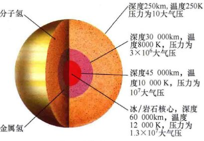
<div class="caption" style="text-align: right; clear: right;">
<strong>图12.8 土星的内部</strong><br/>
        根据旅行者号的观测和计算机模拟推导得到的土星的内部结构，可以与图8.12标注的木星的类似结构相比较。
    </div>
<h3>内部加热</h3>
<p>红外测量结果表明，土星的表面（即云顶）温度为97K，远高于土星将它从太阳接收的能量完全再辐射出去所能达到的温度。事实上，土星辐射出的能量是吸收的近3倍。因此，和木星一样，土星有一个内部能量来源。（8.3节）但对于木星多余能量的解释——木星有一个在其形成时遗留下来的巨大的蓄热库——对土星并不适用。土星小于木星，必然会更迅速地冷却——迅速到其原始的能源供应在很久以前就用光了。那么，土星内部发生了什么导致产生了额外的热量呢？</p>
<p>对土星额外热量的起源的解释也解释了该行星表面神秘的氦的缺乏。在木星内部的高温高压下，液态氨溶解在了液态氢中。在土星内部，温度较低，氦不那么容易溶解，相反，会趋于形成液滴。这种现象厨师是熟悉的，他们知道调味料一般在热的液体中比在冷的液体中更容易溶解。土星可能一开始以类似的方式将氦溶解在氢中，但氦往往会从周围的氢中凝结而出，就像地球大气层中的水汽凝结形成雾气。</p>
<p>氦凝结量最大的地方是土星寒冷的外层。在这里，约20亿年前，雾变成雨。从那以后，液态氦的小雨就一直下，穿过了土星的内部。这种<strong>氦雨</strong>消耗了土星外层的氦含量。</p>
<p>因此，我们可以解释土星大气层中氦不寻常的低丰度：其大部分已经以下雨的形式下降到了较低的层。但是过度加热呢？答案很简单：由于氦气向中心下沉，所以这颗行星的引力场将其压缩并加热。由此释放的引力能是土星内部热量的来源。在遥远的未来——10亿年左右——氦雨会停下来，土星将降温，直到最外层只能辐射它们收到的来自太阳的能量。当这种情况发生时，土星云顶的温度将是74K。随着土星冷却，也可能有一天会经历内部的氦降水，导致其表面温度再次上升。</p>
<h3>磁层活动</h3>
<p>土星导电的内部快速自转产生了一个强磁场和广阔的磁层。可能是因为土星的金属氢区质量较小，土星的基本磁场强度只有木星的1/20左右，或约1000倍地球磁场。正如地球的磁场位于地球表面一样，土星的磁场位于它的云顶（离土星的中心大约10个地球半径）。旅行者号的测量结果表明，与木星和地球的磁场轴有些倾斜不同，土星的磁场相对于它的自转轴并不倾斜。土星磁场的南北极导向与地球相反，这一点跟木星一样。也就是说，地球的指北针会指向土星的南极，而不是它的北极。（8.4节）图12.9显示了土星上的极光，于1998年由哈勃太空望远镜拍摄。</p>
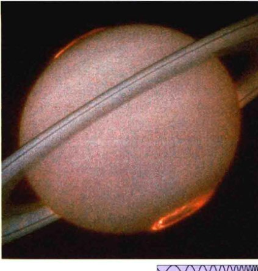
<div class="caption" style="text-align: right; clear: right;">
<strong>图12.9 土星上的极光</strong><br/>
        哈勃太空望远镜搭载的紫外线相机于1998年的太阳风暴期间拍摄了这张照片，显示了土星上一个非常对称的（橙色的）极光。[美国国家航空航天局 (NASA)]
    </div>
<p>土星的磁层朝向太阳延伸约100万千米，大到足以包含土星的光环系统和最里面16颗小卫星。土星最大的卫星，土卫六 (Titan) 的轨道距离土星大约120万千米，所以它有时在磁层里，有时在磁层外，具体取决于太阳风（它将面向太阳侧的磁层推向更接近行星）的强度。由于土星的磁层深处没有大的卫星存在，因此其结构的细节不同于木星的磁层。例如，没有相当于木卫一等离子体环面的东西。（8.5节）类似木星，土星发出无线电波，但碰巧的是，由于它们被地球的电离层反射（它们在中波波段），所以一直没有被检测到，直到旅行者号飞船接近这颗行星。</p>
<div class="concept-check">
        土星大气中的氦去了哪里？
    </div>
<h2>12.4 土星壮观的光环系统</h2>
<p>土星在外观方面最明显和最知名的，当然是它的行星光环系统。现在天文学家知道，所有的类木行星都有光环，但土星的光环最亮、最广阔、最美丽。（8.6节）</p>
<h3>从地球看</h3>
<p>伽利略在1610年首次看到了土星的光环，但他并没有意识到自己看到了行星周围围绕着的光环。以他的小望远镜的分辨率，光环看上去就像土星的肿块，或者（他推测）某种三行星系统的一部分。图12.10 (a) 和 (b) 是两幅伽利略早期绘制的土星的草图。到了1616年，伽利略已经认识到“肿块”不是圆的，在形状上更像椭圆。1655年，荷兰天文学家惠更斯意识到了那个所谓的肿块是什么：薄而扁平的光环，完全环绕土星[图12.10 (c)]。</p>
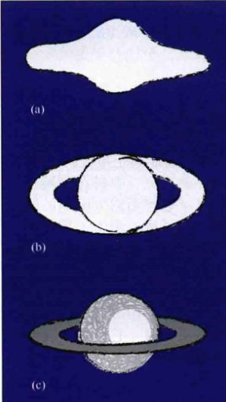
<div class="caption" style="text-align: left; clear: left;">
<strong>图12.10 土星光环草图</strong><br/>
        由艺术家重新绘制的三幅土星光环草图。(a) 1610年由伽利略绘制。(b) 1616年由伽利略绘制。(c) 1655年由惠更斯绘制。
    </div>
<p>1675年，法国-意大利天文学家乔瓦尼·多梅尼科·卡西尼发现了光环的第一个特征：一条暗带，距离内缘约2/3的距离。从地球看，暗带看起来像一个光环上的缝隙（这一观测距真相已经不太远了，但我们现在知道，其内部实际上有一些光环物质）。这个“缝隙”被命名为<strong>卡西尼环缝</strong>，以向它的发现者致敬。在地球上进行的仔细的观测表明，内侧的“光环”实际也由两个光环组成。由外而内，三个光环有点直白地被称为A环、B环和C环。卡西尼环缝介于A环和B环之间。窄得多的恩克环缝，大约300km宽，在A环的外侧被发现。这些光环特征在图12.11中都被标了出来。在地球上的观测无法获得更好的光环细节了。三个主光环中，B环较亮，其次是有些暗淡的A环，最后是几乎半透明的C环。光环性质被更完整地列在了表12.1中。（表中列出的D环、E环、F环和G环在本节后面讨论）。</p>
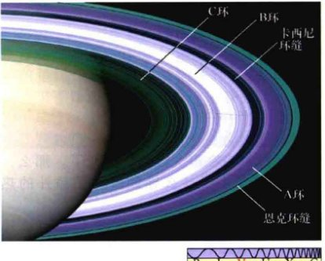
<div class="caption" style="text-align: right; clear: right;">
<strong>图12.11 土星光环</strong><br/>
        这幅卡西尼号飞船于2005年拍摄的土星照片展示了土星，尤其是其光环的更精细的结构。主要的光环结构在这里被标记了出来，并以伪彩色显示以增强对比度。[美国国家航空航天局 (NASA)]
    </div>
<p>表12.1 土星光环</p>
<table>
<thead>
<tr>
<th>光环</th>
<th colspan="2">内半径</th>
<th colspan="2">外半径</th>
<th>宽度/km</th>
</tr>
<tr>
<th></th>
<th>半径/km</th>
<th>土星半径的倍数</th>
<th>半径/km</th>
<th>土星半径的倍数</th>
<th></th>
</tr>
</thead>
<tbody>
<tr>
<td>D</td>
<td>67 000</td>
<td>1.11</td>
<td>74 700</td>
<td>1.24</td>
<td>7 700</td>
</tr>
<tr>
<td>C</td>
<td>74 700</td>
<td>1.24</td>
<td>72 000</td>
<td>1.53</td>
<td>17 300</td>
</tr>
<tr>
<td>B</td>
<td>92 000</td>
<td>1.53</td>
<td>117 500</td>
<td>1.95</td>
<td>25 500</td>
</tr>
<tr>
<td>卡西尼环缝</td>
<td>117 500</td>
<td>1.95</td>
<td>122 300</td>
<td>2.03</td>
<td>4 800</td>
</tr>
<tr>
<td>A</td>
<td>122 300</td>
<td>2.03</td>
<td>136 800</td>
<td>2.27</td>
<td>14 500</td>
</tr>
<tr>
<td>恩克环缝<sup>①</sup></td>
<td>133 400</td>
<td>2.22</td>
<td>133 700</td>
<td>2.22</td>
<td>300</td>
</tr>
<tr>
<td>F</td>
<td>140 300</td>
<td>2.33</td>
<td>140 400</td>
<td>2.33</td>
<td>100</td>
</tr>
<tr>
<td>G</td>
<td>165 800</td>
<td>2.75</td>
<td>173 800</td>
<td>2.89</td>
<td>8 000</td>
</tr>
<tr>
<td>E</td>
<td>180 000</td>
<td>3.00</td>
<td>480 000</td>
<td>8.00</td>
<td>300 000</td>
</tr>
</tbody>
</table>
<p>① 恩克环缝在A环里。</p>
<h3>土星光环是什么？</h3>
<p>“土星光环是由什么组成的？”这样一个相当直白的问题困扰了地球上最好的科学家和数学家近两个世纪。到19世纪中叶，各种动力学和热力学的证据已经确凿证明：光环不可能是固体、液体或气体！</p>
<p>那么，还剩下什么？1857年，在显示了固体的光环会变得不稳定、最后破碎后，苏格兰物理学家詹姆斯·克拉克·麦克斯韦提出，光环是由大量的小颗粒组成的，所有的颗粒都独立绕土星旋转，就像许多小卫星。这灵光一闪的猜测于1895年被验证，当时利克天文台的天文学家测量光环反射的太阳光的多普勒频移，并表明，由此确定的速度，与单独颗粒按照牛顿的引力定律以圆形轨道绕土星运行所应有的速度精确一致。（2.8节）</p>
<p>是什么样的颗粒组成了光环？它们反射了大多数（超过80%）照射到它们的阳光，这一事实早就对天文学家暗示，它们都是由冰构成的。20世纪70年代的红外观测证实了水冰确实是光环的一个主要组成部分。雷达观测和之后的旅行者号和卡西尼号对其散射的太阳光的研究表明，颗粒的直径范围从几分之一毫米到几十米，大多数颗粒的大小（和成分）类似地球上的一个大雪球。</p>
<p>我们现在知道，光环真的是很薄的——根据卡西尼号的测量，仅10~15m厚。土星可以透过它们被看到，就像汽车大灯穿透一场暴风雪。为什么光环这么薄？答案似乎是光环颗粒之间的碰撞倾向于让它们都在一个单一的平面内以圆形轨道移动。任何粒子如果试图偏离这种有序的运动，就会发现自己运行到了其他光环颗粒的轨道上并很快与其他粒子相撞。在一个很长的时期，不断发生的冲撞令所有颗粒保持在圆形、平面的轨道上运动。土星的非对称引力场（由其扁平的形状造成）令光环位于该行星的赤道平面内。</p>
<h3>洛希极限</h3>
<p>但是，这些颗粒为什么会形成光环？什么样的过程首先产生了光环摆在首位？要回答这些问题，我们就要考虑一颗小卫星在轨运行接近一个巨大的行星（如土星）后的命运。卫星被内在的力——例如它自身的重力——凝聚成一个整体。当我们让假设的卫星更接近行星时，作用在其上的引潮力会增加。回想一下第4章，这样的引潮力的效果是沿指向行星的方向拉伸该卫星——也就是创建了一个潮汐隆起。还记得引潮力随着卫星到行星的距离的减小而迅速增加吗？（4.6节）随着卫星被拉近行星，它到达了一个点，在这里，倾向于将其拉伸的引潮力大于将其凝聚成整体的内在力。在这一点上，卫星被行星的引力撕碎，如图12.12所示。卫星的每个碎片都沿着自己独立的轨道绕行星公转，最终一路扩散成环绕行星整整一周的光环。</p>
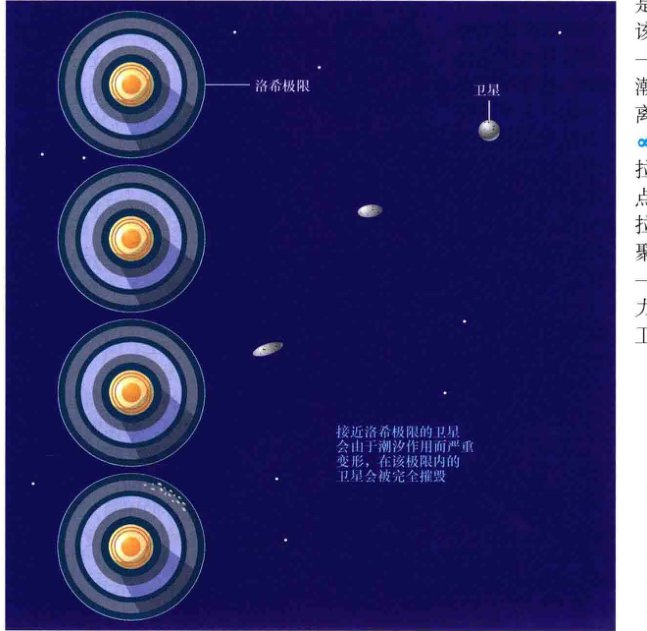
<div class="caption">
<strong>图12.12 洛希极限</strong><br/>
        从上到下，这四幅图描绘了一颗行星的潮汐效应如何首先扭曲（靠近顶部），然后破坏掉（底部）靠得太近的卫星。注意中间部分的失真被夸大了，卫星的坠落不会一下子发生，它的解体会在许多持续的绕转过程中慢慢发生。
    </div>
<p>对于任何给定的行星和卫星，卫星在其内就会被破坏的临界距离被称为<strong>潮汐稳定极限</strong>，或<strong>洛希极限</strong>，以19世纪的法国数学家爱德华·洛希的名字命名，他第一个计算出了这个极限。作为一个方便的拇指规则，如果我们假设的卫星由自身的引力凝聚在一起，其平均密度可以与其母行星相比（对土星较大的卫星来说，这样的近似是恰当的），那么洛希极限是土星半径的大约2.4倍。因此，对于土星，没有卫星可以生存在距其中心144,000km的范围内——这个范围超出了A环外缘约7000km。土星主要的环（A、B、C、D和F）占据了土星洛希极限内的区域。</p>
<p>这些因素也同样适用于其他的类木行星。图12.13显示了相对于行星的洛希极限的每颗类木行星的光环系统的位置。鉴于我们假设中的近似，我们可以得出结论，所有主要的行星光环都在它们的母行星的洛希极限内。请注意，严格来说，此极限的计算方法仅适用于质量足够大的低密度卫星，其自身引力是将其凝聚的主导力量。足够小的卫星（直径小于10km左右）可以存在于洛希极限之内，因为它们大多是被原子间的（电磁）力维持在一起，而不是通过引力。</p>

<div class="caption">
<strong>图12.13 类木行星的光环系统</strong><br/>
        这里展示了木星、土星、天王星和海王星到其光环的距离，都以行星半径表示。红线代表洛希极限，所有这些环都在它们的母行星的洛希极限内（或非常接近）。
    </div>
<h3>光环的细节</h3>
<p>因此，随着两个旅行者号探测器于1980年和1981年接近土星，地球上的科学家相当确信，他们已理解了光环的性质。然而，其实光环中还藏着相当多的惊喜。旅行者号的飞越永远地改变了我们对这个宇宙后院的壮观地区的看法，揭示了光环比天文学家想象的要复杂得多。卡西尼号在四分之一个世纪后进行了四年的土星系统之旅，使天文学家对旅行者号发现的许多现象做出了更广泛、更详细的研究，并对这个迷人的系统产生了许多新的认识。</p>
<p>随着旅行者号探测器接近土星，下列事实变得越来越明显：主要的光环是由上万个狭窄的<strong>细环</strong>组成的，在图12.14中表现出来（类似于卡西尼号看到的）。虽然旅行者号的相机在光环中的确找到了一些新的缝，但实际上，图中的细环并不是彼此分离、中间完全空无一物的。相反，详细研究表明，光环包含同心的、密度高低交替的光环颗粒。细环是高密度的峰。根据理论，土星的内卫星的引力影响和光环颗粒之间的相互引力使物质波在光环平面中形成和移动，有点像池塘表面的涟漪。波峰横扫了光环的周围，形成紧密缠绕的螺旋形图案，被称为螺旋密度波，类似于巨大的天体留声机唱片的凹槽。</p>
<p>虽然细环是螺旋波作用在光环上的结果，但真正的环缝却不是。更窄的缝——大约有20个——被认为之所以能“保持干净”，是因为嵌入它们的小卫星的活动。这些小卫星（也许直径10km或20km）比真正的光环中的最大颗粒更大，它们简单地通过沿其运行轨道碰撞的方式来“横扫”光环颗粒。然而，尽管在旅行者号和卡西尼号的图像上进行了仔细的搜索，但到目前为止，只发现了两颗小卫星。30km宽的卫星土卫十八，于1991年在旅行者号的档案数据中被发现，轨道在恩克环缝中（在图12.11中标出）。7km的土卫三十五，由卡西尼号拍摄于2005年，“居住”在狭窄的基勒缝，接近A环的外缘。</p>

<div class="caption">
<strong>互动图12.14 土星光环，近景</strong><br/>
        卡西尼号拍摄了这张特写，土星的真彩色图像中有着眼花缭乱的光环结构，直到该行星稀薄的外圈。为了更直观地体会其大小，这里将地球以同样的比例尺叠加在一旁。插入图是B环的一部分的俯视图，更详细地显示出了细环结构，这里的分辨率实际上是令人难以置信的4km。[美国国家航空航天局 (NASA)]
    </div>
<p>旅行者1号发现了一系列淡淡的光环，现在被统称为D环，在C环内边缘的内部，绵延向下直到土星的云顶。D环含有相对较少的粒子，因此很暗淡，在地球上完全看不到。其他两个淡淡的光环——E环和G环——分别由先驱者11号和旅行者1号发现，位于远远超出主光环结构的地方。它们暗淡而弥散，相比土星系统的主要光环A环、B环和C环，它们更像木星的光环。（8.6节）E环似乎与土卫二上的火山活动有关 (12.5节)。</p>
<p>图12.15是一幅卡西尼号拍摄的图像，以过去从未见过的角度——绕到土星后方，往被挡住的太阳方向——看光环。正如对着光线看透过窗口射进来的阳光最容易看到弥漫在空气中的灰尘一样，这颗行星暗弱的光环清晰显示在了这张非凡的逆光图像上。此外，该图像揭示了一些额外的微弱的光环，其中有些仍然与各种小卫星的轨道有关。</p>

<div class="caption">
<strong>图12.15 逆光的光环</strong><br/>
        卡西尼号在它飞到土星的阴影中时拍摄了这张土星光环的壮观图像。平常很难看到的F、G和E等外环，在这张对比度增强的图像中都清晰可见（被标出）。插入图显示了在E环内公转的卫星土卫二，它的喷发可能给光环带来了冰粒。[美国国家航空航天局 (NASA)]
    </div>
<p>旅行者1号的摄像头捕捉到了另一个完全令人意想不到的特征。B环上形成了一系列暗的放射状的“辐条”，绕土星运行了一整个轨道周期，然后消失了（图12.16）。仔细推敲这些奇特的漂流物，发现它们是由盘旋在光环平面上方几十米的非常细的粉尘（微米级）组成的。科学家们认为，这些灰尘被光环平面产生的电磁力维持在那里，也许源于颗粒之间的碰撞 or 它们与行星磁场的相互作用。光环旋转，辐条逐渐褪色。</p>

<div class="caption" style="text-align: right; clear: right;">
<strong>图12.16 光环上的辐条</strong><br/>
        土星的B环上有一系列较暗的暂时的“辐条”，由旅行者2号在距离约400万km处飞过时拍摄。辐条是由悬浮在光环平面上的小颗粒造成的。卡西尼号也已经看到了辐条，虽然（到目前为止）它们没有25年前旅行者号看到的那些醒目。[美国国家航空航天局 (NASA)]
    </div>
<p>天文学家预计，这类辐条的建立和分解会经常出现在土星光环系统中，但在卡西尼号旅程的第一年期间，并没有看到这个现象。然而，正如行星暗弱的光环，光线和观测条件似乎是辐条是否可见的关键。随着行星相对于太阳改变方位，辐条终于在2005年年底被观测到了。预计辐条活动是卡西尼号任务剩下的常规课题，研究人员希望通过反复观察，能够了解这种奇特的现象。</p>
<h3>轨道共振和牧羊犬卫星</h3>
<p>旅行者号的图像显示，光环中最大的缺口——卡西尼环缝，并非完全空无一物。事实上，在图12.14中可以看出，该环缝包含了一系列暗淡的细环和小缝（推测起来，也有嵌入式小卫星）。然而，作为一个整体，该环缝中光环颗粒的整体凝聚度远低于A环和B环。环缝的自然弥散导致它在图12.15中显得比较亮。虽然其内部的小缝可能是由嵌入式小卫星导致的，该环缝本身却不是。相反，它的存在应该归功于另一个太阳系共振，一方面涉及在环缝中公转的颗粒，另一方面涉及土星最内侧的大卫星——土卫一。（5.4节）</p>
<p>在卡西尼环缝内公转的光环粒子的轨道周期恰好是土卫一的一半。因此，该环缝中的颗粒绕土星两圈所花费的时间完全精确地等于土卫一公转一周的时间——这个配置被称为 2:1 共振。应用开普勒第三定律（当然这里不是针对行星，而是针对土星的卫星）我们可以得知，这个与土卫一 2:1 的共振对应的半径为 117,000km，正好是环缝的内缘。（详细说明2-2）</p>
<p>这种共振的效果是，环缝中的颗粒会在其轨道上每隔一圈就在完全一样的位置受到土卫一的引力拖拽。连续的拖拽彼此加强，光环颗粒最初的圆形轨道很快就会被拉伸成椭圆形。在它们的新轨道上，这些粒子与其他粒子发生碰撞，并最终以自己的方式进入新的、具有另一个半径的圆形轨道，最终的净效果是在卡西尼环缝上的粒子的数量大大减少。</p>
<p>“非共振”轨道上的粒子（它们所在的轨道半径对应的公转周期与土卫一的公转周期并没有简单的相关性）也受土卫一的引力作用。但在整个轨道上都可能会遇到作用力最大时，所以实际上感受不到拖拽作用。这有点像推秋千上的孩子：每次都在摆动过程中相同的点推，产生的结果比随机猛推要好很多。因此，土卫一（或任何其他的卫星）对光环上的下述位置有很大的影响：在该半径处存在共振，而来自其他地方的影响则很少或没有。</p>
<p>我们现在知道，光环颗粒间和卫星之间的共振在塑造精美的土星光环结构方面发挥了重要作用。例如，A环的尖锐外缘被认为受与土卫一的3:2共振所支配（光环的三个轨道周期等于土卫一的两个轨道周期）。大多数行星光环的理论预测：随着时间的推移，光环系统应该扩散——主要是因为光环颗粒之间的碰撞。相反，F环的外缘“巡逻”着一颗名为土卫十五的小卫星，被土卫一的引力维持在那里，防止了光环颗粒的扩散。比较表12.1和表12.2，看看能否识别其他土星的卫星之间或卫星和光环之间的共振联系。（你应该能够找到不少——土星光环是一个复杂的地方！）</p>
<p>A环外是一个也许是最奇怪的光环——淡淡的、狭窄的F环，如图12.17所示，由先驱者11号在1979年发现，但只有当旅行者1号近距离观看时，它的复杂性才充分显现出来。不像内侧的主光环，F环很狭窄——不到100km宽。它刚好位于土星的洛希极限内，离开A环大约3500km。其狭窄本身是不寻常的，形状也略有偏心，但F环最奇怪的特点是它的不规则的、“扭结”的结构，使得它看起来好像是由几根独立的绳索编织在一起的！这种奇特的外观对力学家寻找答案造成了干扰。但现在看来，光环的复杂结构，以及很薄的厚度，都源于两颗小卫星——被称为<strong>牧羊犬卫星</strong>——的影响，它们分别位于其两侧，绕土星公转，如图12.17 (b) 所示。</p>
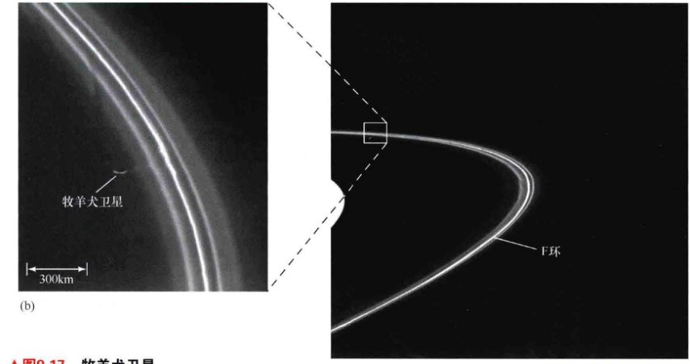
<div class="caption">
<strong>图12.17 牧羊犬卫星</strong><br/>
        (a) 土星狭窄的F环似乎包含扭结和“辫子”，使得它不像土星的任何其他光环。它的薄可以这样解释：两颗牧羊犬卫星在光环附近公转——一个在内侧几百千米处，另一个在外侧相似的距离处。(b) 一颗马铃薯状的牧羊犬卫星（土卫十六，直径约为100km）可以在这个放大图中看到。[美国国家航空航天局 (NASA)]
    </div>
<p>两颗小的、暗的卫星，每颗的直径都是100km多一点，被称为土卫十六（普罗米修斯）和土卫十七（潘多拉），在F环的两边约1000km的轨道上绕土星公转。它们的引力对F环颗粒的影响令光环被紧紧限制在其狭窄的轨道内。任何偏离F环太远的粒子都会被一颗或另一颗牧羊犬卫星轻轻地引导回“囚笼”中。（土卫十五以有点类似的方式限制了A环。）</p>
<p>然而，关于土卫十六和土卫十七如何在F环中产生“辫子”的细节，为什么两颗卫星以这样类似的轨道在那个地方待着，至今仍不清楚。科学家推测，可能有许多看不见的小个子卫星的轨道在F环附近，影响其外观。有证据表明，在A环、B环和C环的空隙处发现的偏心光环也可能是由牧羊犬小卫星的影响导致的。</p>
<h3>光环的起源</h3>
<p>土星光环被认为有两个可能的来源。天文学家估计光环物质的总质量不超过 10<sup>15</sup> 吨——足以形成一颗直径约250km的卫星。如果这样的卫星误入土星的洛希极限内或者在附近被破坏（可能因为撞击），就可能导致一个光环。另一种观点是，光环代表遗留下来的46亿年前土星形成阶段的材料。在这种情况下，土星的潮汐场防止任何卫星在洛希极限里面形成，所以自那时起，这些物质便开始保持为一个环了。哪种说法是正确的？</p>
<p>对许多研究人员而言，观测到的土星光环的动力学活动暗示，光环必然很年轻——也许不超过5000万岁，比太阳系年轻100倍。当然，争论也很多，比如光环能否数十亿年一直保持稳定？这里面牵涉太多的事情，所以一般认为它们不是从土星形成阶段遗留下来的。如果的确如此，那么要么光环被不断补充——也许是陨石撞击土星的卫星形成的碎片，或者较大的卫星上的活动（见12.5节）；要么它们是一个相对较近的，可能是灾难性的，发生在土星系统中的事件——一颗小卫星被一颗大彗星，甚至另一颗卫星撞击——的结果。</p>
<p>最近，卡西尼号复杂化了这一讨论，它发现不同的光环可能有不同的年龄，甚至可能以不同的方式形成。卡西尼号的数据结合理论模拟表明，B环的年龄实际上可能已经有数十亿年了，但它设法通过不断聚集和回收它的物质来露出新的、明亮的水冰，以保持其年轻的外观。</p>
<h2>12.5 土星的卫星</h2>
<p>在所有行星中，土星有最广泛的，并且在许多方面是最复杂的天然卫星系统。土星的8颗最大卫星的直径全都超过300km（列在表12.2中）。对它们反射的阳光的观测认为，它们中的大部分都覆盖着冰雪。它们中的许多可能几乎完全是由水冰构成的。即便如此，它们也有奇妙和多样的命运，它们的结构和历史的许多方面仍然没有被很好地了解。我们对这些卫星的大部分详细了解来自20世纪70年代末和80年代初发射的先驱者号和旅行者号飞船的飞越，以及目前正在环绕土星飞行的卡西尼号探测器。（探索3-2）</p>
<p>卫星分为三个相当自然的群体。第一个群体，有许多“小”卫星——形状不规则的大冰块，直径全部小于400km——表现出令人眼花缭乱的各种复杂和迷人的运动。只有最大的土卫七被列在表12.2中。第二个群体，有六颗“中型”卫星——呈球形，直径范围大约在400~1500km——提供了土星环境在过去和现在的状态的线索，同时还对它们自己的外形和历史提出了许多难题。第三个群体，土星还有一颗单独的“大”卫星——土卫六，直径为5150km，是太阳系中的第二大卫星。（木星的木卫三稍微大一点。）（一些科学家认为）土卫六的大气密度可以与地球相比，其表面环境可能有利于生命。</p>
<p>表12.2 土星的主要卫星</p>
<table>
<thead>
<tr>
<th>名字</th>
<th>到土星的距离 (km)</th>
<th>轨道周期 (天)</th>
<th>大小 (最长直径, km)</th>
<th>质量 (月球的质量)</th>
<th>密度 (g/cm³)</th>
</tr>
</thead>
<tbody>
<tr>
<td>土卫一</td>
<td>186,000</td>
<td>0.94</td>
<td>398</td>
<td>0.00051</td>
<td>1.1</td>
</tr>
<tr>
<td>土卫二</td>
<td>238,000</td>
<td>1.37</td>
<td>498</td>
<td>0.00099</td>
<td>1.1</td>
</tr>
<tr>
<td>土卫三</td>
<td>295,000</td>
<td>1.89</td>
<td>1060</td>
<td>0.0085</td>
<td>1.0</td>
</tr>
<tr>
<td>土卫四</td>
<td>377,000</td>
<td>2.74</td>
<td>1120</td>
<td>0.014</td>
<td>1.4</td>
</tr>
<tr>
<td>土卫五</td>
<td>527,000</td>
<td>4.52</td>
<td>1530</td>
<td>0.032</td>
<td>1.2</td>
</tr>
<tr>
<td>土卫六</td>
<td>1,220,000</td>
<td>16.0</td>
<td>5150</td>
<td>1.83</td>
<td>1.9</td>
</tr>
<tr>
<td>土卫七</td>
<td>1,480,000</td>
<td>21.3</td>
<td>370</td>
<td>-</td>
<td>-</td>
</tr>
<tr>
<td>土卫八</td>
<td>3,560,000</td>
<td>79.3</td>
<td>1440</td>
<td>0.022</td>
<td>1.0</td>
</tr>
</tbody>
</table>
<h3>土卫六：有大气的卫星</h3>
<p>土星的所有卫星中最大的和最有趣的是土卫六，是在1655年由克里斯蒂安·惠更斯发现的。即使是通过大型地基光学望远镜观测，该卫星也只是一个勉强可见的微微发红的小圆盘。然而，在旅行者号或卡西尼号任务很久之前，天文学家就已经通过光谱观测知道了，该卫星偏红的颜色是由一种很特别的东西——大气层造成的。任务策划者是如此渴望能近距离仔细地看看土卫六，因此他们将旅行者1号的轨道设计为从土卫六很近的地方掠过，尽管这意味着飞船无法再利用土星的引力继续前往天王星和海王星。最后，旅行者1号离开了土星系统后，其路径远高于太阳系黄道面，只能径直向太阳系之外飞去。（探索3-1）</p>
<p>图12.18(a)显示了一幅旅行者1号拍摄的土卫六的图像。不幸的是，尽管飞船在很近的地方掠过，但该卫星的表面仍然是一个谜。笼罩着该卫星的厚而均匀的一层霾（类似于在地球上许多城市上空都能发现的，由光驱动的化学反应创造的光化学烟雾）完全遮住了飞船的视线。尽管如此，旅行者1号还是能够向任务专家提供详细的大气数据。图12.18(b)给出了在地球上拍摄的该卫星最好的照片之一——用红外波段拍摄，以穿透雾霾。对于土卫六详细、近距离的仔细观测是正在进行的卡西尼号任务的一个关键部分。正如探索9-1描述的，该飞船的精心设计的轨迹包括对该卫星的许多额外访问，直到其扩展任务结束。</p>

<div class="caption">
<strong>图12.18 土卫六</strong><br/>
        (a) 土卫六是土星最大的卫星，大于水星，大约有地球的一半大。这张照片是旅行者1号于1980年通过土卫六时在可见光波段拍摄的。在图中只能看到土卫六的上层云盖。(b) 在这张红外照片中——由莫纳克亚山上的加拿大-法国-夏威夷望远镜的自适应光学系统拍摄——可以看到一些大型的表面特征。明亮的区域被认为是高地，可能覆盖着冰冻的甲烷。最亮区域的尺度为近4000km——约相当于澳大利亚的大小。[美国国家航空航天局 (NASA)、加拿大-法国-夏威夷望远镜 (CFHT)]
    </div>
<div class="discovery-box">
<h3>探索9-1：在土星的卫星中跳舞</h3>
<p>在第3章中，我们介绍了任务策划者如何在飞船飞向其目标的路上，经常使用“引力弹弓”使飞船加速和调整其轨道方向。（探索3-1）美国宇航局的很多行星任务都严重依赖这方面的专门知识。（探索3-2）伽利略号和卡西尼号探测器还在木星和土星的卫星系统中大量使用引力协助控制航天器复杂的轨道。在这里，我们介绍了卡西尼号是如何设法反复接近土星系统中的许多卫星的——这些非凡的数据的关键部分已经传送给了地球上的科学家。</p>
<p>卡西尼号任务原定于2008年——在它抵达土星4年后结束。但将该探测器发射进围绕土星轨道的引力协助策略是如此精确，以至于几乎没有使用燃料来微调轨道。因此，这个非常成功的任务——在2009年8月穿过光环平面后，该任务被改名为卡西尼昼夜平分点任务——已被延长到2017年。即使卡西尼号的燃料供应不断下降，但任务控制者仍然能调整其轨道，主要是利用土卫六的引力，以到达在土星系统中所需的位置。</p>
</div>
<p>土卫六的大气层甚至比地球的更厚、密度更大，而且肯定远远比任何其他卫星都厚实。在旅行者1号于1980年到来之前，只有甲烷和其他一些简单的碳氢化合物在土卫六上被确定探测到了。由旅行者1号和卡西尼号所做的射电和红外观测表明，土卫六的大气实际上主要由氮 ($N_2$, 大约98%) 和甲烷 ($CH_4$, 约2%) 组成，另外还有氢气和其他气体的痕迹。</p>
<p>土卫六的大气层看起来像一个巨大的化学工厂，由太阳光的能量驱动。该大气层正在经历一系列复杂的化学反应，维持稳定（但微量）的氢气 ($H_2$)、乙烷 ($C_2H_6$)、丙烷 ($C_3H_8$) 和一氧化碳 ($CO$) 水平，最终导致了天文学家观测到的雾霾。卡西尼号搭载的光谱仪已经发现了层层雾霾之下的有机分子。上层大气因为含有气溶胶雾霾（非常小的液滴，可以保持悬浮在大气中）而较厚，看不见的卫星表面似乎覆盖着从云层中落下来的有机物质。</p>
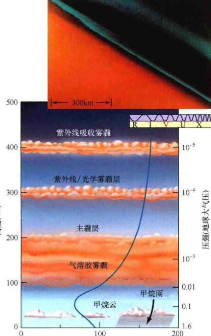
<div class="caption">
<strong>图12.19 土卫六的大气层</strong><br/>
        土卫六大气层的结构，根据旅行者1号的观测推导出。蓝色实线代表不同海拔处的温度。插入图显示了土卫六大气层上部的雾霾层，位于土卫六的橙色表面之上。[美国国家航空航天局 (NASA)]
    </div>
<h3>土卫六的表面和内部结构</h3>
<p>卡西尼号的观测改进了我们的土卫六大气模型，并且已经彻底改变了我们对该卫星表面和内部的认识。在土卫六的寒冷环境中，水冰扮演着地球上岩石的角色——类似木卫三和木卫四，而液态水则相当于熔岩。（8.5节）在卡西尼号来到现场之前，对可能在土卫六表面发现什么的猜测，包含了各种各样的情况，从液态甲烷或乙烷的海洋，到充满“烃淤泥”的峡谷。</p>
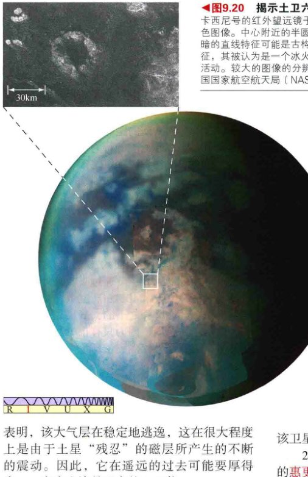
<div class="caption">
<strong>图12.20 揭示土卫六</strong><br/>
        卡西尼号的红外望远镜于2004年年末拍摄了这张土卫六表面的红外、伪彩色图像。中心附近的半圆形区域可能是一个古老的撞击盆地。插入图显示了一个圆形表面特征，其被认为是一个冰火山。[美国国家航空航天局 (NASA)/欧洲航天局 (ESA)]
    </div>
<p>图12.20显示了卡西尼号的红外线仪器如何能穿透土卫六的大气，揭示其表面的细节。该图像显示了中心视场附近的亮区和暗区——被认为是冰的高原，并显然被油气焦油所“污染”。土卫六表面的山脊和裂缝表明了以“土卫六地震”的形式表现出来的地质活动可能是常见的。亮区与暗区之间相当模糊的边界，亮区古怪的表面标记，分布广泛的撞击坑的缺乏，这些都暗示了某种程度的侵蚀正在发生——或许是由于风或火山活动。雷达成像揭示了土卫六表面上几个大的（直径为 10~100km）撞击坑，但小撞击坑并没有想象中的那么多——考虑到土卫六在土星拥挤的光环平面的位置。图中的插入图显示的可能是冰火山，支持了该卫星表面地质活跃的观点。</p>
<p>2005年1月，由卡西尼号运到土星并释放的惠更斯号探测器到达了土卫六，并穿过厚厚的大气层降落到该卫星的表面。图12.21(a)显示了惠更斯号下降时通过无线电传回来的一幅有趣的图像。它似乎显示了一个通往海岸线的排水沟渠网络，但这一解释仍不确定。之前描述的云的缺乏意味着，据推测造成了这些沟渠的甲烷雨可能不像最初认为的那样普遍。目前的模型表明，这种雨可能是季节性现象——在冬季飘落，在夏季蒸发。惠更斯号到达土卫六时正好是着陆点处的冬季结束时。探测器降落在坚实的表面上，并在接下来的1小时里发送图像和仪表读数给卡西尼号——当卡西尼号从其头顶经过时。来自土卫六表面的照片（图12.21(b)）揭示了一个朦胧的冰地形景观。前景中的“石头”的直径大约为几十厘米，显示出被某种液体侵蚀的外观。后来对数据的详细分析表明，着陆器滑动后停在一个泥泞的、覆盖着薄的固体层——类似地球上冰冻的雪，但它最有可能由乙烷组成——的表面。</p>
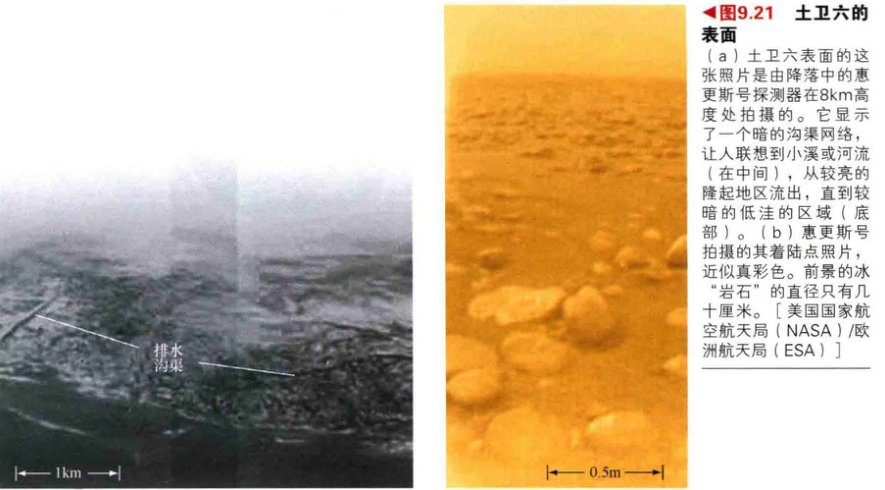
<div class="caption">
<strong>图12.21 土卫六的表面</strong><br/>
        (a) 土卫六表面的这张照片是由降落中的惠更斯号探测器在8km高度处拍摄的。它显示了一个暗的沟渠网络，让人联想到小溪或河流。(b) 惠更斯号拍摄的其着陆点照片，近似真彩色。前景的冰“岩石”的直径只有几十厘米。[美国国家航空航天局 (NASA)/欧洲航天局 (ESA)]
    </div>
<p>2003年，射电天文学家报道，他们用阿雷西博望远镜探测到了土卫六表面的液态烃湖泊。2007年，卡西尼号任务专家证实了这一发现，展示了呈现出众多湖泊的雷达图像。其中，许多湖泊的长度为几十千米，靠近土卫六的北极地区——这是当时该卫星上最冷的部分。图12.22为这些新图像中的一个例子。类似金星的麦哲伦号雷达图像，最黑暗的区域是非常光滑的，这意味着它们是由液体组成的。该区域的形状也有力地暗示其为液体。</p>

<div class="caption">
<strong>图12.22 土卫六的湖泊</strong><br/>
        卡西尼号搭载的雷达探测了许多光滑区域（在这幅射电图像中为深蓝色），这些区域被认为是液态甲烷的湖泊，靠近土卫六的北极。其中最大的“湖泊”比地球上任何一个大湖都要小得多。[美国国家航空航天局 (NASA)/欧洲航天局 (ESA)]
    </div>
<p>随后，卡西尼号证实了液态乙烷湖泊的存在，但其确切的成分仍然不明朗。甲烷是肯定存在的。甲烷雨注入湖泊，但在土卫六的环境下，它比乙烷不稳定得多，所以它可能迅速蒸发，只留下更重的烃。计算机模型表明，湖泊大多是乙烷 (75%)，而甲烷 (10%) 和丙烷 (7%) 则组成其余部分的大多数。在湖泊中没有检测到波浪，暗示它们可能还含有更重的焦油状烃类，这增加了它们的黏度。</p>

<div class="caption">
<strong>图12.23 土卫六内部</strong><br/>
        基于多次飞越对土卫六引力场的测量，土卫六内部看来主要是岩石-冰的混合物。最有趣的是类似在木卫二和木卫三上可能存在的表面下的液态水层。
    </div>
<p>天文学家也早就预料到，土卫六的内部组成和结构类似于木卫三和木卫四，因为这三颗卫星有颇为相似的质量、半径和平均密度。（土卫六的密度为 1900kg/m<sup>3</sup>）。（8.5节）土卫六包含一个岩石核心，由一个厚的水冰地幔包围。卡西尼号每次通过土卫六，都使科学家可以探测土卫六的引力。反复通过加上对土卫六可能的成分和性质的了解，让科学家能建立起相当详细的该卫星内部的模型。图12.23显示了最近的这类模型中的一个。它的确显示了一个岩质的冰核心和一个冰幔层，但有趣的是，该模型还预言在表面以下几十千米存在着一层厚厚的液态水。因此，土卫六加入了木卫二、木卫三和地球这些太阳系中含有大型液态水体的天体的大名单，而这意味着生命有可能在那里发展！（8.5节）</p>
<div class="concept-check">
        为什么行星科学家对土卫六如此感兴趣？
    </div>
<h3>土星的中型卫星</h3>
<p>土星的中型卫星包括（按照到土星由近到远的顺序）土卫一（3.1，表示位于3.1倍行星半径处，下同）、土卫二 (4.0)、土卫三 (4.9)、土卫四 (6.3)、土卫五 (8.7) 和土卫八 (59.1)。这些卫星以适当的尺度显示在图12.24中。在太空时代以前很久，这六颗卫星就都通过地基观测而发现了。内侧的五颗卫星都在近圆形轨道上运行，都被土星的引力潮汐锁定而同步转动（因此其中一面总是朝向这颗行星）。因此，它们在进行公转运动时都拥有永久的“正面”和“背面”，这个事实对了解它们通常不对称的表面特征非常重要。</p>

<div class="caption">
<strong>图12.24 土星的中型卫星</strong><br/>
        卡西尼号飞船看到的土星的6颗中型卫星，与作为比较的月球，均按照同一比例示出。图中所有的天体都密布撞击坑，并且所有天体在这里都显示其真实色彩。[加州大学 (UC) / 利克天文台 (Lick Observatory)、美国国家航空航天局 (NASA)]
    </div>
<p>与木星的伽利略卫星的密度不同，这六颗卫星的密度不具有与土星距离的任何相关性。土星的中型卫星的密度都在 1000~1400kg/m<sup>3</sup> 之间，这意味着相比在木星系统中的情况，在它们的形成过程中，是否贴近中央行星的热源是一个不太重要的因素。（8.5节）科学家认为，中型卫星主要由岩石和水冰构成，像土卫六。它们的密度低于土卫六的主要原因是它们的质量较小，因此其核心压缩程度较低。所有这些卫星上都密布撞击坑，显示出早期太阳系混乱和有毁灭力的行星环境——碎片相撞形成外行星及其卫星。（3.6节）</p>
<p>这六颗卫星中最大的是土卫五，质量只有月球的1/30，其冰质表面有较高的反射率，密布着撞击坑。在这个卫星表面的低温条件下，水冰非常坚硬，像内行星上的岩石。出于这个原因，土卫五表面的撞击坑看起来非常像月球或水星上的环形山。撞击坑的密度与月球的高地类似，表明其表面很古老，并且没有广泛地质活动的证据。</p>
<p>位于最内侧，也是最小的中型卫星是<strong>土卫一</strong>。尽管其质量低——只有土卫五质量的1%——且正如我们已经看到的，它靠近光环，引起了与光环颗粒的共振相互作用，导致了最显著的卡西尼环缝。土卫一可能是因为其邻近光环而布满了撞击坑。该卫星表面的主要特征是一个巨大的撞击坑，被称为赫歇尔环形山，位于该卫星的正面。这个撞击坑的直径接近卫星本身直径的1/3。造成赫歇尔环形山的撞击，一定具有非常接近完全摧毁土卫一的力量。这次撞击所产生的碎片，很有可能创建或维持了我们所看到的壮观的光环。</p>
<p><strong>土卫二</strong>显示在图12.25中，轨道只比土卫一靠外一点。它的大小、质量、成分和轨道与土卫一太像了，人们猜测，这两颗卫星的外观和历史也会彼此相似。然而并非如此，土卫二是如此明亮和闪耀——它几乎100%反射照到其上的阳光！天文学家认为它的表面必然完全覆盖了一层纯冰的结晶——液态水在来自该卫星内部的压力下喷出，形成了水“火山”的冰“灰烬”。</p>
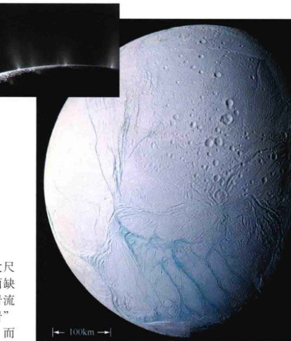
<div class="caption">
<strong>图12.25 土卫二</strong><br/>
        在这幅卡西尼号航天器拍摄的令人费解的图像中，土星卫星中一个微小的冰覆盖的卫星——土卫二显示出了在环形山很少的南部有年轻地形的证据。长的蓝色“虎斑纹”条纹（约1km宽）是冰裂缝，气体通过它们逸出，形成一层很薄的但实实在在的大气层。插入图显示了在这颗奇特的卫星的边缘，一些从间歇泉喷出的喷流。[喷气推进实验室(JPL)]
    </div>
<p>旅行者号发现，该卫星蕴藏着某种大尺度火山活动的明显证据。其大部分的表面缺乏撞击坑，它们似乎已经被看起来像熔岩流的东西给抹掉了——当然，这里的“熔岩”是水，水在最近的内部突变中暂时液化，而现在又冻结了。卡西尼号在2008年和2009年对土卫二的飞越已探测到，在该卫星的南极附近有貌似地球的板块构造。图12.25可见的“虎斑纹”断裂可能类似地球上的扩张点，如大西洋中脊。（4.4节）不同的观点认为，涉及的过程实际上可能更类似于地球上许多火山活动区域中发现的地热活动，一些天文学家偏爱描述这些特征为间歇泉，而不是火山。类似的活动已经在海王星的卫星海卫一上被发现。（见10.5节）</p>
<p>最外围的中型卫星是<strong>土卫八</strong>，它围绕土星的轨道有点偏心和倾斜，半长轴为360万千米。它的质量大约是土卫五的3/4。土卫八是一颗双面卫星：黑暗的正面（图12.24中土卫八照片的底部）只反射到达它的阳光的大约3%，而冰质的背面则反射50%。在太阳系中其他地方看到的类似的暗沉积物被认为在性质上是有机的（含碳的），它们可以通过太阳辐射对烃（如甲烷）冰的作用而产生。</p>

<div class="caption">
<strong>图12.26 土星的弥漫光环</strong><br/>
        该艺术概念图显示了几乎不可见的光环，远远超出土星及其常见的宏伟的光环家族。[斯必泽空间望远镜 (SST) / 喷气推进实验室 (JPL)]
    </div>
<p>天文学家长期以来一直困惑于为什么深色特征只在土卫八的一侧存在，因为在它绕土星公转时，那一侧似乎并没有邻近的物质供其扫除。然而，在2009年，斯皮策太空望远镜发现了一个新的、巨大的、非常弥漫的光环，距土星超过600万千米。它在可见光下看不见，但在红外波段却相当突出。正如图12.26所描绘的，土卫八位于这个光环的内边缘，光环上的粒子数十亿年的稳定积累可以自然解释该卫星不对称的外观。</p>
<h3>小卫星</h3>
<p>最后，我们来看看土星的众多数小卫星。我们对它们的质量知之甚少（主要从它们的引力对光环的影响上推断），但它们被认为在组成上类似木星的小卫星。它们大多数直径不到几十千米。它们中最大的是在19世纪被发现的——分别是1848年和1898年发现的土卫七和土卫九，而所有其他的小卫星则是从20世纪后期开始陆续被发现的。只有在光环内或附近的卫星是由旅行者号和卡西尼号航天器发现的。这些微小的天体对土星系统的“总体图像”不发挥明显作用，但几十年来，它们与光环之间的相互作用和复杂的动力学却一直激发着天文学家的兴趣。</p>
<p>在超出A环刚好1万千米的地方，有着所谓的共轨卫星土卫十和土卫十一。正如其名称所暗示的，这两颗卫星“分享”同一条轨道，只不过是以一种非常奇怪的方式——在任何给定的时刻，两颗卫星都在相对土星的圆形轨道上，但其中一个的轨道半径比另一个稍小。每颗卫星都服从开普勒定律，因此内侧轨道的卫星公转比外侧的稍快，于是会超过后者。内侧的卫星超过外侧的一圈大约需要4个地球年。</p>
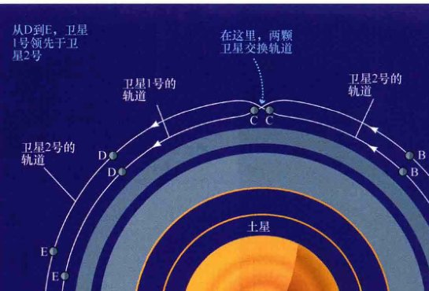
<div class="caption" style="text-align: right; clear: right;">
<strong>图12.27 共轨卫星</strong><br/>
        土星的共轨卫星——土卫十和土卫十一——在它们绕土星公转时玩一个永不结束的捉迷藏游戏。
    </div>
<p>事实上，许多其他小卫星也分享轨道，而这一次是与大卫星。土卫十三和土卫十四有着与土卫三的轨道同步的轨道，因此这两颗较小的卫星相对较大的卫星来说总是保持固定，在精确的超前其60°和落后其60°的位置跟着它一起围绕土星旋转，如图12.28所示。土卫十二也类似地被绑定于土卫四。这些60°点被称为拉格朗日点，以最先研究它们的法国数学家约瑟夫·路易斯·拉格朗日命名。稍后我们将看到这个特殊的1:1轨道共振的更多的例子存在于一些小行星绕太阳的运动中，它们被困在木星轨道的拉格朗日点上。</p>
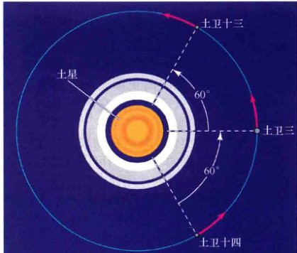
<div class="caption">
<strong>图12.28 同步轨道</strong><br/>
        土卫十三和土卫十四的轨道被绑定在土卫三的运动上。土星和土卫三的合并引力拉拽效果让这两颗小卫星在任何时候都保持正好60°领先或落后于那颗较大的卫星，因此这三颗卫星共享轨道，并且永远不会改变它们的相对位置。
    </div>
<div class="concept-check">
        为什么土星的中型卫星显示出不对称的表面特征？
    </div>
<div class="ultimate-question">
<h3>终极问题</h3>
<p>欣赏土星时——无论是在这一章的壮观的照片中，还是通过别人家后院的小望远镜，我们不得不问，为什么这颗星球有这样壮丽的光环围绕？也许，散落在整个光环中的松散的岩石和冰是太阳系早期留下来的废物——它们是太阳系形成阶段的物质，一直无法成功地凝聚成靠近土星的卫星。或者一些卫星的确在很早之前就形成了，但由于其脆弱的物质和与土星过于接近，它很快就解体了——实实在在地被猛烈的潮汐力撕裂。卡西尼-惠更斯号任务正在积极地尝试解决这个深刻的天文之谜。</p>
</div>
<hr/>
<h2>章节回顾</h2>
<aside class="sidebar">
<span class="sidebar-title">小结</span>
<ol>
<li><strong>土星</strong>是古代天文学家所知的最外围的行星。直到望远镜发明后，才发现它的光环和卫星。光环位于土星的赤道平面上，相对于土星公转轨道的倾角为27°，所以其相对地球的外观随绕太阳的公转而变化。土星比木星小，但仍然远远大于任何类地行星。如同木星，土星的自转很快，产生了明显的扁平化，显示出较差自转。来自土星磁层的强大的射电发射使得其内部的自转速度可以被测定。</li>
<li>类似木星，天气系统也可以在土星上被看到，虽然它们不太明显。偶尔能看到大风暴。土星有着比木星更弱的引力和更加延展的大气。这颗行星整体的奶油糖果色源于类似在木星的大气层中发生的云化学过程。类似木星，土星有由内部的对流运动驱动的云带、卵形斑和湍流模式。卡西尼号拍摄了土星的南极涡流。</li>
<li>同样类似木星，土星发射进入太空的辐射远比它从太阳接收的多。不同于木星，土星的多余的能量辐射是这个星球内部的<strong>氦雨</strong>(p.223)的结果——氨液化后形成液滴，然后落向这个星球的中心。这个过程也造成了土星观测到的氦缺乏。理论上，土星的内部与木星的类似，但有着更薄的金属氢层和较大的核心。土星较低的质量使得它相比木星的核心有不那么极端的核心温度、密度和压力。土星的内部结构和快速自转产生了一个强磁场和一个广阔的磁层——包含该行星的光环系统和许多最内侧的卫星。</li>
<li>从地球上看，光环主要的可见的特征是A环、B环和C环 (p.224)、<strong>卡西尼环缝</strong>(p.224)和<strong>恩克环缝</strong>(p.224)。光环是由上万亿的从尘埃到巨石大小不等的冰颗粒组成的，它们的总质量可以与小卫星相媲美。两个环缝是黑暗的，因为它们几乎没有光环颗粒。主光环中包含数万个狭窄的<strong>细环</strong>(p.226)。光环粒子和行星内部卫星之间的相互作用造成了大部分观测到的精细结构。狭窄的F环 (p.229) 位于A环外一点儿，有扭结的辫状结构——显然是由两颗小<strong>牧羊犬卫星</strong>(p.230)引起的，这两颗卫星的轨道接近该光环，并防止它破裂。在F环之外是暗淡的、狭窄的G环 (p.227)，虽然还没有被发现，但其尖锐的边缘和明亮的弧表明有一颗牧羊犬小卫星。暗淡的D环 (p.227) 位于C环和土星的云层之间。弥漫的E环 (p.227) 与土卫二有关。</li>
<li><strong>行星的洛希极限</strong>(p.226)是这样一个距离：在其内，行星的潮汐场将压倒卫星的内部引力，将其撕碎并形成一个光环。所有已知的行星的光环系统都位于它们的母行星的洛希极限内。行星环可能只有几千万年的寿命。如果是这样，那么我们看到所有四颗类木行星周围都有环这一事实，意味着这些环必然不断地重新形成和被补充——也许是靠从卫星上被陨石撞击出来的物质，或者是靠潮汐力摧毁整个卫星得到物质。</li>
<li>土星唯一的大卫星<strong>土卫六</strong>是太阳系中的第二大卫星。它浓密的大气层掩盖了该卫星的表面，其中可能有着复杂的云和表面化学过程。土卫六的表面是如此寒冷，以至于水的外观像岩石，而液态甲烷则流动如水。卡西尼号搭载的传感器允许科学家得以第一次测绘该卫星的表面，揭示出持续的侵蚀和火山活动的证据。惠更斯号探测器降落在其冰质表面上，并拍下了可能是由流动甲烷刻出来的沟渠。土卫六上大气层的存在是在该卫星形成时盛行的寒冷的气候条件的直接后果。</li>
<li>土星的中型卫星主要由岩石和水冰组成。它们展现出各种各样的表面地形，其上都遍布撞击坑，并被土星的引力潮汐锁定在同步轨道上。最内侧的中型卫星土卫一对光环的结构造成了影响。卡西尼环缝是那里的光环颗粒和土卫一之间共振的结果。土卫八拥有一个赤道山脊，其正面和背面形成鲜明对比。土卫二有高反射性的外观，这是其表面的水“火山”造成的结果。土卫五和土卫四的表面上有着广阔的冰悬崖，这是随着该卫星的冷却其外层破裂的结果。土星的小卫星呈现出多种复杂的运动。几颗卫星“共享”轨道，在某些情况下位于<strong>拉格朗日点</strong>(p.240)，超前60°和落后60°于一颗较大卫星的轨道。</li>
</ol>
</aside>
<section class="exercises">
<h2>复习与讨论</h2>
<ol>
<li><strong>L01</strong> 为什么土星的外观相比木星没那么多变？它的形状告诉我们关于它内部深处的什么信息？</li>
<li>从地球上看，土星的光环有时显得很宽、很壮丽，但有时又似乎是消失了。为什么？</li>
<li>比较和对比土星和木星的大气和天气系统，并说明这些差异如何影响两颗行星的外观。</li>
<li><strong>L02</strong> 比较土星和木星对应的各层（云、分子氢、金属氢和核心）的厚度。为什么厚度会不同？</li>
<li><strong>L03</strong> 什么样的机制造成了土星大气层中氦的相对缺乏（与木星的大气层相比较）？</li>
<li><strong>L04 POS</strong> 土星环是什么时候被发现的？天文学家在什么时候意识到它们是什么的？</li>
<li><strong>L05</strong> 太靠近土星的卫星会发生什么？</li>
<li><strong>POS</strong> 有什么证据支持这样的观点：一个相对较近的灾难性事件造成了土星光环？</li>
<li>土卫一对土星光环有什么影响？</li>
<li>什么是牧羊犬卫星？</li>
<li><strong>L06</strong> 比较和对比土卫六与木星的伽利略卫星。</li>
<li>为什么土卫六有浓密的大气，而太阳系的其他大型卫星却有没？</li>
<li><strong>POS</strong> 土卫二上地质活动的证据是什么？</li>
<li><strong>L07</strong> 土卫二与土星光环之间的联系是什么？</li>
<li>描述土星的共轨卫星的运行。</li>
</ol>
<h2>概念自测：选择题</h2>
<ol>
<li><strong>VIS</strong> 根据图12.1（“光环方向”），从地球上看，下一次土星光环大致侧对我们将大概在哪一年？ (a) 2018; (b) 2022; (c) 2025; (d) 2035。</li>
<li>已知土星到太阳的距离是木星的2倍，土星绕太阳一周所花费的时间是木星绕太阳一周所花费的时间的：(a) 明显小于2倍; (b) 2倍; (c) 明显超过2倍。</li>
<li>土星的云层比木星的厚得多，因为土星有：(a) 更多的卫星; (b) 更低的密度; (c) 更弱的磁场; (d) 更弱的表面重力。</li>
<li><strong>VIS</strong> 根据图12.5（“土星的纬向流”），土星上的风在哪里最快？(a) 北极; (b) 北纬50°; (c) 赤道; (d) 南纬50°。</li>
<li>土星的冰-岩石核心大致是地球质量的：(a) 一半; (b) 相同; (c) 2倍; (d) 10倍。</li>
<li>最有可能在土星光环中发现的颗粒是下列哪一项？(a) 房屋大小的巨石; (b) 硅酸盐沙粒; (c) 来自小行星带的小行星; (d) 拳头大小的雪球。</li>
<li>位于一颗行星洛希极限内的卫星将：(a) 改变颜色; (b) 分解成较小的块; (c) 发展出一个磁场; (d) 压扁成盘状。</li>
<li>土卫六表面的大气压与地球表面大气压的大小关系是：(a) 小于; (b) 约相等; (c) 前者是后者的约1.5倍; (d) 前者是后者的约16倍。</li>
<li>土星的潮汐锁定卫星：(a) 始终以一面对着土星; (b) 不自转; (c) 始终位于土星表面的相同的点的上空; (d) 与所有其他卫星的距离保持不变。</li>
<li>在土星和土卫三的拉格朗日点绕土星旋转的土卫十三和土卫十四：(a) 到土星的轨道距离是土卫三的2倍; (b) 轨道比土卫三更靠近土星; (c) 始终保持相同的分开距离; (d) 始终位于土星和太阳之间。</li>
</ol>
</section>
</article>